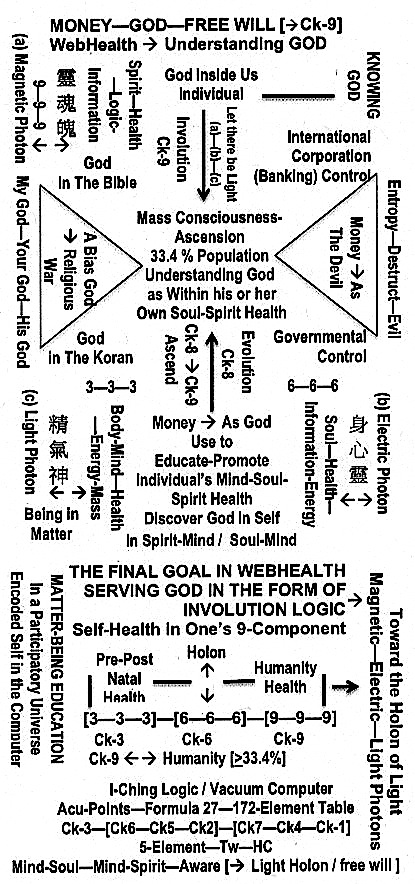

Knowing GOD
KNOWING GOD AND THE HOLON CONCEPT OF HEAVEN DEFINED
Paradigm-God Summary: The quotations below are composed by Rich Deem taken from the Internet suggested the indication that our universe is pre-designed. The design, as argued in this Paradigm, is created / co-created by a set of common involution logic self-encoded in God’s vacuum computer. I use the word God because there exists no term to identify the input of number 9 that started this self-programmable vacuum computer via symmetry breaks (in the form of a Logic Big Bang; namely the breaking of the Logic Holon [3—3—3]—[6—6—6]—[9—9—9]) onto a set of line-diagram coordinates defined by the Holon of Pre-Heaven—Post-Heaven—Mind octagons. This set of self-programming language is defined within the logic of the I-Ching, namely the spirit-mind / soul-mind logic inside the Holon of [靈-魂-魄]—[ 身-心-靈]—[ 精-氣-神]. The word God is as good as any other term such as the Creator, the Inputer, and so on. The Who-What of God is unknowable, since He, She or It is outside of our universe and thus outside of human understandings. In short, the Universe Created in God’s input-command: Let there be Light, the Holon of (Magnetic Photon—Electric Photon—Light Photon) and furthermore, these photons are the free wills given to all God’s Creation to start the Observer—Observed—Evolution processes within the Holon Octagons, which defines the Logic Big Bang and so on. (See Diagram below for detail)
http://www.godandscience.org/apologetics/cosmoconstant.html. Extreme Fine Tuning – Dark Energy or the Cosmological Constant: by Rich Deem
Skeptics like to say that fine tuning cannot be proven by science, since we have only one universe to study. However, the discovery and quantification of dark energy has puzzled a number of scientists, who realize that its extremely small value requires that the initial conditions of the universe must have been extremely fine tuned in order that even matter would exist in our universe. By chance, our universe would have been expected to consist of merely some thermal radiation.
How much fine tuning? How does this discovery impact atheists? Those who favor naturalism had long sought to find the simplest explanation for the universe, hoping to avoid any evidence for design. A Big Bang model in which there was just enough matter to equal the critical density to account for a flat universe would have provided that. However, for many years, it has been evident that there is less than half of the amount of matter in the universe to account for a flat universe. A cosmological constant would provide an energy density to make up for the missing matter density, but would require an extreme amount of fine tuning. The supernovae studies demonstrated that there was an energy density to the universe (but did not define the size of this energy density), and the recent Boomerang study demonstrated that this energy density is exactly what one would expect to get a flat universe. How finely tuned must this energy density be to get a flat universe? One part in 10120,6 which is:
1 000 000 000 000 000 000 000 000 000 000 000 000 000 000 000 000 000 000 000 000 000 000 000 000 000 000 000 000 000 000 000 000 000 000 000 000 000 000 000 000
http://www.godandscience.org/apologetics/quotes.html. Quotes from Scientists Regarding the Design of the Universe: Does science lead us down a road that ends in the naturalistic explanation of everything we see? In the nineteenth century, it certainly looked as though science was going in that direction. The “God of the gaps” was finding himself in a narrower and narrower niche. However, 20th century and now 21st century science is leading us back down the road of design – not from a lack of scientific explanation, but from scientific explanation that requires an appeal to the extremely unlikely – something that science does not deal well with. As a result of the recent evidence in support of design, many scientists now believe in God. According to a recent article:
“I was reminded of this a few months ago when I saw a survey in the journal Nature. It revealed that 40% of American physicists, biologists and mathematicians believe in God–and not just some metaphysical abstraction, but a deity who takes an active interest in our affairs and hears our prayers: the God of Abraham, Isaac and Jacob.”(1)
The degree to which the constants of physics must match a precise criteria is such that a number of agnostic scientists have concluded that there is some sort of “supernatural plan” or “Agency” behind it. Here is what they say:
The quotes
Fred Hoyle (British astrophysicist): “A common sense interpretation of the facts suggests that a superintellect has monkeyed with physics, as well as with chemistry and biology, and that there are no blind forces worth speaking about in nature. The numbers one calculates from the facts seem to me so overwhelming as to put this conclusion almost beyond question.” (2)
George Ellis (British astrophysicist): “Amazing fine tuning occurs in the laws that make this [complexity] possible. Realization of the complexity of what is accomplished makes it very difficult not to use the word ‘miraculous’ without taking a stand as to the ontological status of the word.” (3)
Paul Davies (British astrophysicist): “There is for me powerful evidence that there is something going on behind it all….It seems as though somebody has fine-tuned nature’s numbers to make the Universe….The impression of design is overwhelming”. (4)
Paul Davies: “The laws [of physics] … seem to be the product of exceedingly ingenious design… The universe must have a purpose”. (5)
Alan Sandage (winner of the Crawford prize in astronomy): “I find it quite improbable that such order came out of chaos. There has to be some organizing principle. God to me is a mystery but is the explanation for the miracle of existence, why there is something instead of nothing.” (6)
John O’Keefe (astronomer at NASA): “We are, by astronomical standards, a pampered, cosseted, cherished group of creatures.. .. If the Universe had not been made with the most exacting precision we could never have come into existence. It is my view that these circumstances indicate the universe was created for man to live in.” (7)
George Greenstein (astronomer): “As we survey all the evidence, the thought insistently arises that some supernatural agency – or, rather, Agency – must be involved. Is it possible that suddenly, without intending to, we have stumbled upon scientific proof of the existence of a Supreme Being? Was it God who stepped in and so providentially crafted the cosmos for our benefit?” (8)
Arthur Eddington (astrophysicist): “The idea of a universal mind or Logos would be, I think, a fairly plausible inference from the present state of scientific theory.” (9)
Arno Penzias (Nobel prize in physics): “Astronomy leads us to a unique event, a universe which was created out of nothing, one with the very delicate balance needed to provide exactly the conditions required to permit life, and one which has an underlying (one might say ‘supernatural’) plan.” (10)
Roger Penrose (mathematician and author): “I would say the universe has a purpose. It’s not there just somehow by chance.” (11)
Tony Rothman (physicist): “When confronted with the order and beauty of the universe and the strange coincidences of nature, it’s very tempting to take the leap of faith from science into religion. I am sure many physicists want to. I only wish they would admit it.” (12)
Vera Kistiakowsky (MIT physicist): “The exquisite order displayed by our scientific understanding of the physical world calls for the divine.” (13)
Robert Jastrow (self-proclaimed agnostic): “For the scientist who has lived by his faith in the power of reason, the story ends like a bad dream. He has scaled the mountains of ignorance; he is about to conquer the highest peak; as he pulls himself over the final rock, he is greeted by a band of theologians who have been sitting there for centuries.” (14)
Stephen Hawking (British astrophysicist): “Then we shall… be able to take part in the discussion of the question of why it is that we and the universe exist. If we find the answer to that, it would be the ultimate triumph of human reason – for then we would know the mind of God.” (15)
Frank Tipler (Professor of Mathematical Physics): “When I began my career as a cosmologist some twenty years ago, I was a convinced atheist. I never in my wildest dreams imagined that one day I would be writing a book purporting to show that the central claims of Judeo-Christian theology are in fact true, that these claims are straightforward deductions of the laws of physics as we now understand them. I have been forced into these conclusions by the inexorable logic of my own special branch of physics.” (16) Note: Tipler since has actually converted to Christianity, hence his latest book, The Physics Of Christianity.
Alexander Polyakov (Soviet mathematician): “We know that nature is described by the best of all possible mathematics because God created it.”(17)
Ed Harrison (cosmologist): “Here is the cosmological proof of the existence of God – the design argument of Paley – updated and refurbished. The fine tuning of the universe provides prima facie evidence of deistic design. Take your choice: blind chance that requires multitudes of universes or design that requires only one…. Many scientists, when they admit their views, incline toward the teleological or design argument.” (18)
Edward Milne (British cosmologist): “As to the cause of the Universe, in context of expansion, that is left for the reader to insert, but our picture is incomplete without Him [God].” (19)
Barry Parker (cosmologist): “Who created these laws? There is no question but that a God will always be needed.” (20)
Drs. Zehavi, and Dekel (cosmologists): “This type of universe, however, seems to require a degree of fine tuning of the initial conditions that is in apparent conflict with ‘common wisdom’.” (21)
Arthur L. Schawlow (Professor of Physics at Stanford University, 1981 Nobel Prize in physics): “It seems to me that when confronted with the marvels of life and the universe, one must ask why and not just how. The only possible answers are religious. . . . I find a need for God in the universe and in my own life.” (22)
Henry “Fritz” Schaefer (Graham Perdue Professor of Chemistry and director of the Center for Computational Quantum Chemistry at the University of Georgia): “The significance and joy in my science comes in those occasional moments of discovering something new and saying to myself, ‘So that’s how God did it.’ My goal is to understand a little corner of God’s plan.” (23)
Wernher von Braun (Pioneer rocket engineer) “I find it as difficult to understand a scientist who does not acknowledge the presence of a superior rationality behind the existence of the universe as it is to comprehend a theologian who would deny the advances of science.” (24)
Carl Woese (microbiologist from the University of Illinois) “Life in Universe – rare or unique? I walk both sides of that street. One day I can say that given the 100 billion stars in our galaxy and the 100 billion or more galaxies, there have to be some planets that formed and evolved in ways very, very like the Earth has, and so would contain microbial life at least. There are other days when I say that the anthropic principal, which makes this universe a special one out of an uncountably large number of universes, may not apply only to that aspect of nature we define in the realm of physics, but may extend to chemistry and biology. In that case life on Earth could be entirely unique.” (25)
There Is a God: How the World’s Most Notorious Atheist Changed His MindAntony Flew (Professor of Philosophy, former atheist, author, and debater) “It now seems to me that the findings of more than fifty years of DNA research have provided materials for a new and enormously powerful argument to design.” (26)
Frank Tipler (Professor of Mathematical Physics): “From the perspective of the latest physical theories, Christianity is not a mere religion, but an experimentally testable science.” (27)
References
- Jim Holt. 1997. Science Resurrects God. The Wall Street Journal (December 24, 1997), Dow Jones & Co., Inc.
- Hoyle, F. 1982. The Universe: Past and Present Reflections. Annual Review of Astronomy and Astrophysics: 20:16.
- Ellis, G.F.R. 1993. The Anthropic Principle: Laws and Environments. The Anthropic Principle, F. Bertola and U.Curi, ed. New York, Cambridge University Press, p. 30.
- Davies, P. 1988. The Cosmic Blueprint: New Discoveries in Nature’s Creative Ability To Order the Universe. New York: Simon and Schuster, p.203.
- Davies, P. 1984. Superforce: The Search for a Grand Unified Theory of Nature. (New York: Simon & Schuster, 1984), p. 243.
- Willford, J.N. March 12, 1991. Sizing up the Cosmos: An Astronomers Quest. New York Times, p. B9.
- Heeren, F. 1995. Show Me God. Wheeling, IL, Searchlight Publications, p. 200.
- Greenstein, G. 1988. The Symbiotic Universe. New York: William Morrow, p.27.
- Heeren, F. 1995. Show Me God. Wheeling, IL, Searchlight Publications, p. 233.
- Margenau, H and R.A. Varghese, ed. 1992. Cosmos, Bios, and Theos. La Salle, IL, Open Court, p. 83.
- Penrose, R. 1992. A Brief History of Time (movie). Burbank, CA, Paramount Pictures, Inc.
- Casti, J.L. 1989. Paradigms Lost. New York, Avon Books, p.482-483.
- Margenau, H and R.A. Varghese, ed. 1992. Cosmos, Bios, and Theos. La Salle, IL, Open Court, p. 52.
- Jastrow, R. 1978. God and the Astronomers. New York, W.W. Norton, p. 116.
- Hawking, S. 1988. A Brief History of Time. p. 175.
- Tipler, F.J. 1994. The Physics Of Immortality. New York, Doubleday, Preface.
- Gannes, S. October 13, 1986. Fortune. p. 57
- Harrison, E. 1985. Masks of the Universe. New York, Collier Books, Macmillan, pp. 252, 263.
- Heeren, F. 1995. Show Me God. Wheeling, IL, Searchlight Publications, p. 166-167.
- Heeren, F. 1995. Show Me God. Wheeling, IL, Searchlight Publications, p. 223.
- Zehavi, I, and A. Dekel. 1999. Evidence for a positive cosmological constant from flows of galaxies and distant supernovae Nature 401: 252-254.
- Margenau, H. and R. A. Varghese, eds. Cosmos, Bios, Theos: Scientists Reflect on Science, God, and the Origins of the Universe, Life, and Homo Sapiens (Open Court Pub. Co., La Salle, IL, 1992).
- Sheler, J. L. and J.M. Schrof, “The Creation”, U.S. News & World Report (December 23, 1991): 56-64.
- McIver, T. 1986. Ancient Tales and Space-Age Myths of Creationist Evangelism. The Skeptical Inquirer 10:258-276.
- Mullen, L. 2001. The Three Domains of Life from SpaceDaily.com
- Atheist Becomes Theist: Exclusive Interview with Former Atheist Antony Flew at Biola University (PDF version).
- Tipler, F.J. 2007. The Physics Of Christianity. New York, Doubleday.
_____________________________________________________________________
PROPOSING A PARTICIPATORY UNIVERSE ENCODED WITHIN GOD’S SELF-PROGRAMED VACUUM COMPUTER DEFINITELY SATISFIES THE DEGREE TO WHICH THE CONSTANTS OF PHYSICS MUST MATCH THEIR PRECISE NUMERICAL CRITERIA FOR THE UNIVERSE TO SUPPORT LIFE AND OTHER FINE TURNINGS. NOTICE, WHO OR WHAT IS GOD NEEDS NO ANSWER. WHAT IS NEEDED IS THE ANSWER TO HOW THE UNIVERSE WAS CREATED, NOT WHO OR WHAT CREATED THE UNIVERSE. THE HOW IS ANSWERED WITHIN THIS PARADIGM.
WITHIN THE MATTER-BEING PARADIGM, THE WORD GOD HAS MEANING ONLY WITH RESPECT TO MIND-SPIRIT READING AND MIND-SOUL EXECUTING OF THE CODES ENCODED IN GOD’S COMPUTER. THESE READING AND EXECUTING FUNCTIONS ARE SPACELESS TIMELESS PERFORMED BY THE SELF-AWARENESS WITHIN THE INDIVIDUAL’S MIND-BEING HOLON OF [靈-魂-魄]—[ 身-心-靈]—[ 精-氣-神]. THE EFFECTIVENESS OF THESE FUNCTIONS IN FINDING THE CODES ENCODED INSIDE GOD’S COMPUTER IS DEPENDED ON THE PRE AND POST NATAL HEALTH OF THE OBSERVER AND HIS OR HER FREE WILL, A FUNCTION OF THE OBSERVER’S REFERENCE FRAME.
NOTICE, ONE’S SPIRIT-MIND / SOUL-MIND CAN ALSO BE “AWARE” OF THE CODES INSIDE THE VACUUM COMPUTER WITHOUT FULLY SATISFIES THE HEALTH OF ONE’S [靈-魂-魄]—[ 身-心-靈]—[ 精-氣-神] HOLON. IN THIS SUB-OPTIMUM STATE, THE HOLON THAT CONNECTS [神 (BEING IN MATTER)]—[靈 (IN 身-心-靈)]—[靈 (IN 靈-魂-魄)] IS BEING ACTIVATED. THIS IS THE SO-CALLED PSYCHE-STATE, THE NEAR DEATH EXPERIENCE, AND THE RADIONIC STATE. HOWEVER, THIS SUB-OPTIMUM STATE IS UNSTABLE AND TEMPORARY. FOR ASCENSION (A STATE IN WHICH THE SELF AS THE OBSERVER AND THE SELF ENCODED INSIDE GOD’S COMPUTER ARE ONE), IN THIS STATE, THE HEALTH OF [靈-魂-魄]—[ 身-心-靈]—[ 精-氣-神] HOLON MUST BE SATISFIED. THIS ASCENDED STATE CAN ALSO BE DEFINED AS A STATE IN WHICH THE INVOLUTION-SELF EQUALS TO THE EVOLUTION-SELF WITH A ZERO ENTROPIC-SELF.
IN SHORT, THERE IS A DIRECT CONNECTION FOR YOU, THE OBSERVER IN FINDING GOD / ASCENSION AND YOUR MIND-SPIRIT / MIND-SOUL HEALTH.
_______________________________________________________________
THE FORMULA: KNOWING GOD IS SHOWN IN THE FOLLOWING DIAGRAM 
{kind=link}
TO BE MORE SPECIFIC, CK-9, HUMANITY HEALTH —-> A STATE IN HUMANITY THAT CONTAINS > 33.4 % OF THE POPULATION’S COLLECTIVE CONSCIOUSNESS, OF WHICH EACH INDIVIDUAL CONSCIOUSNESS WITHIN THIS GROUP SATISFIES THE STATE OF SAGENESS WITHIN—KINGLINESS WITHOUT—GODLINESS IN SELF, THE CONDITION OF [UNCONDITIONAL LOVE—-MASS ASCENSION—-THE TAO] <——> NAMELY THE LOGIC-INFORMATION HOLON OF THE 100 MONKEYS.
__________________________________________________________________
THE HOLON CONCEPT OF HEAVEN
Expanding the Holon Concept of Humanity Health (Ck-9), the concept of Heaven can be defined within Earth from expanding the Logic-Information of the 100 Monkey-Holon across and forming a Population Holon on Earth from 33.4 % —> 50% —> 75% at a state of collective Holon Consciousness defined as Sageness within—Kingliness without—Godliness in Self. Here the word Self (with capital S) is inside a State of 靈-魂-魄. That is to say, when the population Holon is satisfied, then Earth will become Heaven, and at this state of Self-self (existed in both capital and small letter S and s): (1) 靈 —> Collective Spirit, (2) 魂 —> Love, Universal and ((3) 魄 —> the self’s (a small letter s) Logic Body. Thus, the Self in Heaven has a unique Logic Local-Body (a small s in self) that defines Him or Her uniquely in his or her individuality, and simultaneously with two Non-Local collective components (Self in capital S) of 靈魂. At this Ascended Self-self, His or her two Local—Non-Local Holon states 靈-魂-魄 and 身-心-靈 are interchangeable within His or Her own self-controlled free wills.
In short, the Self-self in Heaven has the following mappings within the control of one’s free will: (1) Self —> Spirit—Logic—Information Body, (2) self —> Soul—Information—Energy Body, and to complete the Holon (3) a manifested Energy-Mass Body at will. Within this understanding, the state of Heaven leads to a steady-state (matter-being) universe. Here steady state implies conservation in the universe’s Information—Energy—Mass Holon. At the present, our universe is in an increasing accelerated state of expansion because of an ever-increasing negative information-energy state. In this negative state, human evolution is moving in the opposite direction of human involution with the outcome of a very large entropy state. This accelerated state of entropy can also be concluded by stating that today the devil state hidden in 靈 dominates its God state.
Notice, even within this Ascended Population Holon, there still exist a minority non-ascended Holon Population.
SAGENESS WITHIN—KINGLINESS WITHOUT
The phase Godliness in Self needs no clarification for it simply implies the attainments of a local—non-local state of unconditioned love. However, the statement Sageness Within—Kingliness Without is somewhat strange and needs further clarification. In fact, this statement is what each and every Chinese Philosopher would describe and search for as the attainment of the noblest good and living the highest life. Thus, a man who possesses the Holon State of Sageness Within—Kingliness Without–Godliness in Self is a man who possesses the Tao Method.
According to Fung Yu-Lan (in The Spirit of Chinese Philosophy)
Chinese philosophy has one main tradition, one main stream of thought. This tradition is that it aims at a particular kind of highest life. But this kind of highest life, high though it is, is not divorced from the daily functioning of human relations. Thus it is both of this world [e.g., in the local] and of the other world [namely, in the non-local], and we maintain that it ‘both attains to the sublime and yet performs the common tasks’.
… In his inner sageness he accomplishes spiritual cultivation. in his outward kingliness he functions in society. It is not necessary that a sage should be the actual head of the government in his society. With regard to practical politics, for the most part the sage certainly has no opportunity to be such; and when the statement is made “sage within and king without” it only means that he who has the noblest spirit should theoretically be king. As to whether he actually had or had not the opportunity to be king that is immaterial.